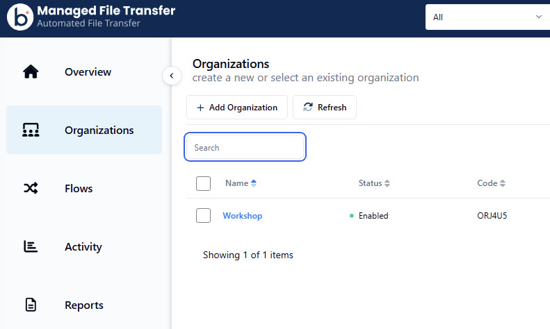
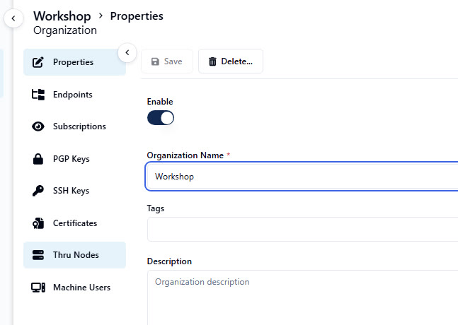
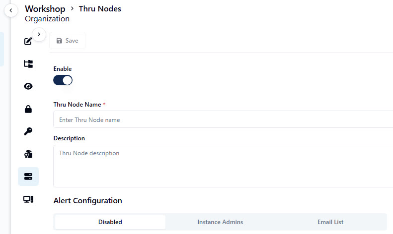
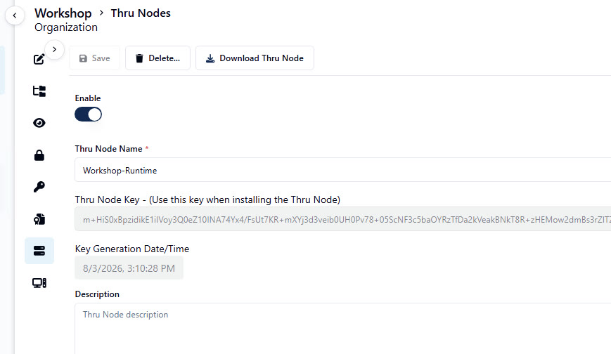
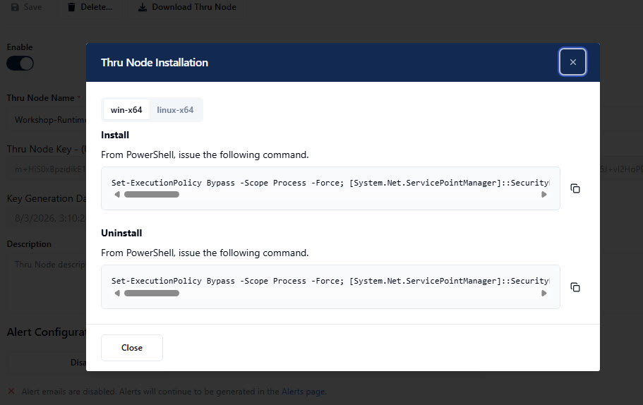

Create your Organization and Runtime (Node)
Nothing is pre-created for you here — you'll set up your own Organization and your own Thru Node, exactly as a customer would during a POC.
⏰ ~5 minCreate your Organization
From the Organizations list, select Add Organization, give it a name (for example, your own name or team), and save.

Open your new Organization and go to Thru Nodes
"Thru Node" is the name you'll see in the app — it's the same thing as the MFT Runtime. From your Organization's Properties page, select Thru Nodes in the left nav.

Add a Thru Node
Give it a name (for example, yourname-Runtime) and save.

Open your node
Select your new node to view its properties and Node Key. The Download Thru Node button is at the top of this page, next to Save and Delete.

Click Download Thru Node
This opens an install popup containing a ready-to-run PowerShell command, pre-filled with your node's unique key — no manual configuration required. Use the copy icon on the right-hand side of the script box to copy the whole command in one click.
